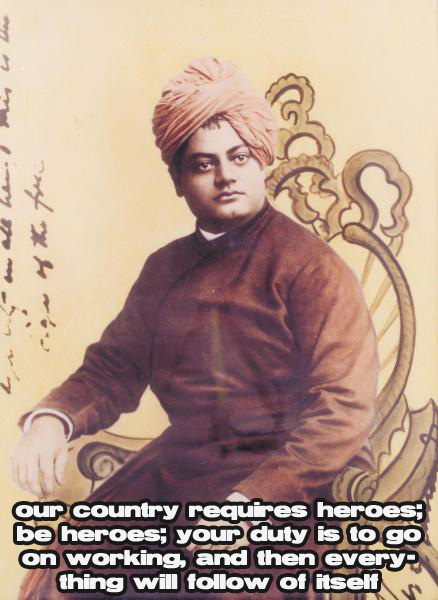
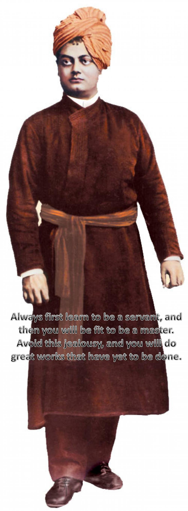

|
Mr. Nrupender Rao (Hyderabad): Nrupender Rao is the Founder Chairman of Pennar Industries Ltd which has an average turnover of over Rs. 8 billion. He is B. Tech. (IIT Kharagpur) - 1961-66. He has also done M.S. Operations Research & Industrial Engineering, Purdue University, USA - 1966-67. Mr. Rao has 40 years of experience in various disciplines in organizations like National Cash Register, USA; Union Carbide India and the Nagarjuna and Pennar groups. He is also the Chairman of Pennar Chemicals Ltd., which manufactures Fuel Additives in technical collaboration with Total of France. Mr. Rao has been the Chairman of the Andhra Pradesh Industrial Infrastructure Corporation (APIIC) for two years (1988-89). He was also a member of the Planning Board of Andhra Pradesh State, for two years. Mr. Rao is a Past National President of the Indo-American Chamber of Commerce and a Past President of the Hyderabad Management Association.
Dr. K Subramaniam (Chennai): Dr. K. subramanyam is a well renowned speaker of Indian culture, religion and education. Highly inspired by Swami Vivekananda, he has dedicated most of his life disseminating Swami Vivekananda's message to the youth. He has been associated with numerous instititions following Swami Vivakananda.'s philosophy. After serving as a lecturer in English in Andhra Pradesh for a few years, he moved to Tamil Nadu to experiment with the Gurukul system of education at collegiate level in Madurai. This college, known as Vivekananda Gurukul college is one of the best colleges in the country with 'A' rank awarded by the NAAC. The College inculcates in students the Indian cultural heritage through a rigorous curriculum in its approach to people, knowledge, values, and skills. Dr. subramanyam has addressed hundreds of gatherings in prestigious institutions. His lectures are broadcasted on AIR and telecasted in the TV channels. He has written more than 200 articles in standard journals on philosophy, culture, religion and education. He has also written an array of books on Indian culture. He is actively engaged in motivating the youth towards a meaningful and purposeful life. He has been awarded "Vivekananda Award for excellence in propagating human values among the youth". He is a well versed in English, Tamil and Telugu. He has been honored with the title of "Parivrajakacharya" by Vivekananda Vibhuti organization in Hyderabad.
Mr. Vikram Singh (Lucknow): Mr. Vikram singh is 1974 IPS. After a long service career, recently served as Director General of Police, UP State. He retired in May 2010.He completed M.Sc from Allahabad university in 1972 and Ph.D (Ecology) from Kumaon university in 1990. During his service, he has twice received President's police Medal for his long distinguished and meritorious services. He has also authored two books; one entitled "Ecosystems of Central Himalayas" and the other one on human rights and police. He is rated as a star speaker on issues related to security, man-management, crisis resolution and team building. He has been a guest speaker at over 50 renowned institutes; IIM(Lucknw), Tata Institute of Social Sciences, Dr.Ram Manohar Lohiya National Law university ,National Institute of Criminology & Forensic Science, Lal Bahadur Shastri National Academy of Administration, National Crime Records Bureau, Sri Ramakrishna Mission,Judicial Training and Research Institute, State Planning Institute(U.P) to name a few of them.
Swami Satyeshananda (New Delhi): Swami Satyeshananda is a monk of the Ramakrishna Order founded by Swami Vivekananda. He was a student of Sri Ramakrishna Vidya Shala, Mysore, a Premier Residential Composite Pre- University college run by the Ramakrishna Order. He completed his MB BS from the Government Medical College, Mysore in 1987 and joined the Ramakrishna Order of Monks in the same year at Belur Math near Kolkota which is the Head Quarters of Ramakrishna Math and Ramakrishna Mission. He was there at Belur Math till 1996 serving as a Physician. He worked as a Physician at the Ramakrishna Mission TB Sanatorium at Ranchi, Jharkhand and Ramakrishna Mission Sevashrama, Kankhal, Haridwar, Uttarakhand State from 1996 to 2008. At present he is in charge of the Ramakrishna Mission District TB Centre and Medical Centre at Karol Bagh, New Delhi. His source of inspiration is the twin ideal placed before Humankind by Swami Vivekananda "For the Freedom of the Self and the good of the world." His articles have been published in journals like VEDANTA KESARI, GLOBAL VEDANTA, PRABUDDHA BHARATA etc. He is a regular speaker in Youth Conventions and loves to place before the youth the time tested wisdom of the sages of India.
Mr. Raviraj Singh (Allahabad): Advocate in Allahabad High Court, prolific speaker on Vedanta. (More information to be added)
|